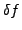
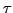
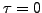

The adjustment of the frequency resolution  is consistent with Eq.3 in the CINDERELLA manual (Reegen 2009), where the total time interval width  has to be provided by the user, because the time series is not incorporated by COMBINE. Moreover, the user is more flexible if allowed to specify a different value for
has to be provided by the user, because the time series is not incorporated by COMBINE. Moreover, the user is more flexible if allowed to specify a different value for  . This interval width is provided by means of the keyword dt in the file <infile>.ini, followed by a floating-point number. The default setting is that COMBINE determines the closest pair of frequencies and uses its inverse frequency spacing as
. This interval width is provided by means of the keyword dt in the file <infile>.ini, followed by a floating-point number. The default setting is that COMBINE determines the closest pair of frequencies and uses its inverse frequency spacing as  .
.
The second parameter, , is specified using the keyword tol, again followed by a floating-point number, in full consistency with CINDERELLA. The default value is , forcing COMBINE to employ the Rayleigh frequency resolution.
The frequency tolerance permits linear combinations where